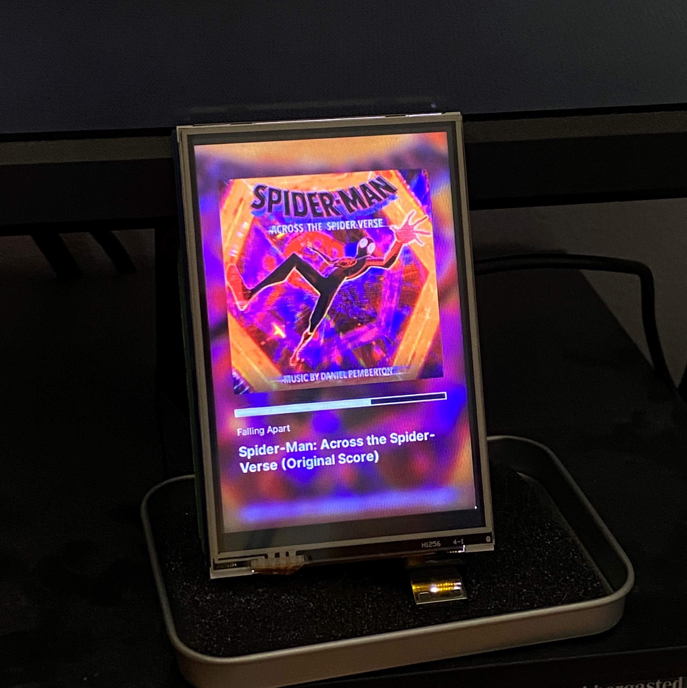

By day, I'm creating build tools and modernising interfaces at IBM. By night, I'm making (and playing) games - both digital and tabletop - or exploring generative art and randomness, like fractals and dynamical systems.
I would hope not. I think the "AI stealing jobs" line is missing the point — yes, it is perhaps "compressing" jobs, raising efficiency expectations, etc. But, until there is enough trust to give an LLM its own laptop with unsupervised peripheral control, we will always need a human in the loop somewhere.
Maybe this is an outdated opinion though and I've missed a grand breakthrough, but let's be real here — it's text prediction, and I wouldn't call that "intelligence", at least not one I would trust outright.

Here's the vibe at the moment:
Also built a Spotify Now Playing display via the Web API.
Open to conversations about new opportunities, collaborations, or interesting problems worth solving. Particularly interested in tech that makes a genuine difference.